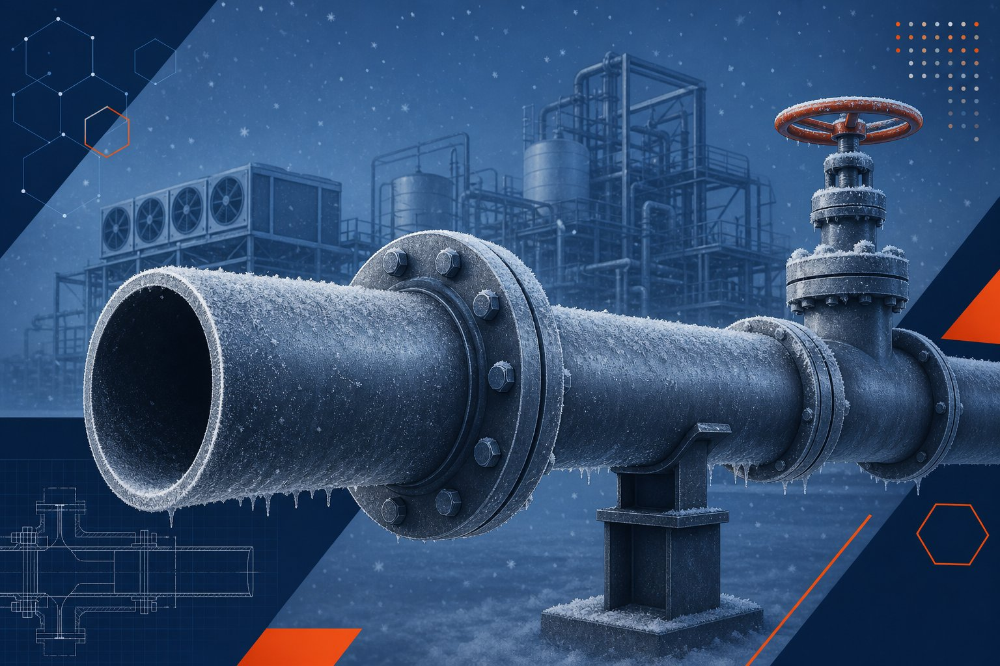

چرا در سرما به لوله مخصوص نیاز داریم؟
فولاد کربنی با کاهش دما به رفتار شکننده نزدیک میشود؛ پدیدهای که در تاریخ صنعت چند فاجعه بزرگ آفریده است. راهحل، کنترل دقیق ترکیب شیمیایی، ریزدانهسازی و اثبات چقرمگی با تست ضربه است. لوله دمای پایین کربنی دقیقاً با همین فلسفه ساخته میشود و برای خطوط هوای سرد، واحدهای برودتی و سرویسهای زیر صفر کاربرد دارد.

ترکیب شیمیایی کنترلشده
محدودههای شیمیایی لوله دمای پایین سختگیرانهتر از لوله کربنی معمولی است: کربن محدودتر، محدوده منگنز مشخص و سقف پایین برای عناصر مضر. این کنترلها همراه عملیات حرارتی مناسب، دمای گذار ترد-شکلپذیر را کاهش میدهند و چقرمگی را در دمای سرویس تضمین میکنند.
الزامات تست ضربه
- انجام تست ضربه روی نمونههای مشخص از محصول نهایی.
- دمای تست مطابق دمای مشخصه گرید و هماهنگ با دمای طراحی پروژه.
- معیارهای پذیرش شامل حداقل انرژی جذبی و در برخی موارد انبساط جانبی.
- درج نتایج در گواهی مواد با شماره ذوب قابل ردیابی.
- برای لوله جوشی، ارزیابی ناحیه جوش نیز در الزامات استاندارد لحاظ میشود.
خواص مکانیکی و روش ساخت
لوله دمای پایین هم به صورت بدون درز و هم جوشی با کنترل کامل تولید میشود. حداقل استحکام کششی این گرید در محدوده لولههای کربنی رایج است و تفاوت اصلی در چقرمگی نهفته است، نه استحکام. برای سایزهای کوچک و فشارهای بالا معمولاً بدون درز و برای قطرهای بزرگ، نسخه جوشی بازرسیشده اقتصادیتر است.
یکپارچگی سیستم خط
- اتصالات باید از جنس مخصوص دمای پایین و تستشده باشند.
- فلنجهای فورج مناسب دمای پایین انتخاب شوند.
- روش جوشکاری باید برای دمای سرویس صلاحیتدار باشد.
- در صورت الزام پروژه، عملیات حرارتی پس از جوش با کنترل دمای ورودی انجام شود.
- پیچ و مهره و گسکت نیز متناسب با دمای پایین انتخاب شوند.
چکلیست استعلام
- دمای طراحی فلز را صریح ذکر کنید.
- ابعاد و اسچول یا ضخامت دقیق را بنویسید.
- الزام تست ضربه و دمای آن را مشخص کنید.
- گواهی مواد با نتایج تست را درخواست کنید.
- اتصالات و فلنج همجنس را همراه لوله استعلام کنید.
مقایسه سریع با لوله دمای بالا
هر دو لوله از خانواده کربن-منگنز هستند و حداقل استحکام مشابهی دارند؛ تفاوت اصلی در الزامات چقرمگی در سرما است. لوله دمای بالا در شرایط عادی تست ضربه ندارد و برای سرویسهای گرم و محیطی اقتصادیتر است، در حالی که لوله دمای پایین ذاتاً با تست ضربه تحویل میشود. بنابراین دمای طراحی، تنها معیار درست انتخاب بین این دو است.
جمعبندی
لوله دمای پایین کربنی، انتخاب هوشمندانه برای سرویسهای زیر صفر است: چقرمگی اثباتشده با هزینهای کمتر از متریالهای آلیاژی و استنلس. کلید خرید موفق، ذکر دمای طراحی و کنترل نتایج تست ضربه در گواهی مواد است.
سوالات رایج
دمای تست ضربه لوله دمای پایین چقدر است؟
برای رایجترین گرید لوله دمای پایین، تست ضربه در دمای مشخصه حدود منفی ۴۵ درجه سانتیگراد انجام میشود. دمای دقیق تست باید با دمای طراحی فلز در پروژه هماهنگ باشد و نتایج در گواهی مواد درج شود.
چرا لوله کربنی در سرما شکننده میشود؟
با کاهش دما، فولاد کربنی از رفتار شکلپذیر به رفتار ترد نزدیک میشود و انرژی مورد نیاز برای شروع و گسترش ترک افت میکند. کنترل ترکیب شیمیایی و ریزدانهسازی، دمای گذار را پایین میآورد و چقرمگی را حفظ میکند.
اتصال و فلنج مناسب این لوله چیست؟
اتصالات مخصوص دمای پایین و فلنجهای فورج مناسب دمای پایین که آنها نیز تست ضربه شده باشند. استفاده از اتصال معمولی در خط دمای پایین، نقطه ضعف کل سیستم است.
آیا این لوله برای سرویسهای خورنده هم مناسب است؟
خیر؛ این گرید برای سرما طراحی شده نه خوردگی. برای سرویس همزمان سرما و خوردگی باید گزینههای استنلس یا پوشش مناسب بررسی شود.
مطالب مرتبط
- مقایسه لوله دمای بالا و دمای پایین
- راهنمای جامع لوله مانیسمان
- راهنمای کامل گواهی مواد و تست
- راهنمای اتصالات جوشی لببهلب
- راهنمای تست شناسایی مثبت متریال
در استعلام، دمای طراحی، ابعاد، روش ساخت و الزام تست ضربه را مشخص کنید تا لوله با نتایج تست معتبر در دمای خواستهشده عرضه شود. گواهی مواد کامل ارائه میشود.
مشاهده صفحه محصول ← ثبت RFQ همین محصولتامین این تجهیزات را به پیشرو تجهیز فرتاک بسپارید
شرکت پیشرو تجهیز فرتاک تامینکننده تخصصی تجهیزات صنعتی برای پروژههای نفت، گاز، پتروشیمی، فولاد و نیروگاهی است. برای دریافت پیشنهاد فنی و قیمت، استعلام (RFQ) خود را ثبت کنید تا کارشناسان مهندسی فروش در کوتاهترین زمان پاسخ دهند.
- تامین لوله دمای پایینلوله کربنی مخصوص سرویس زیر صفر با تست ضربه
- تامین تجهیزات پایپینگاتصالات و فلنج همجنس برای خطوط برودتی